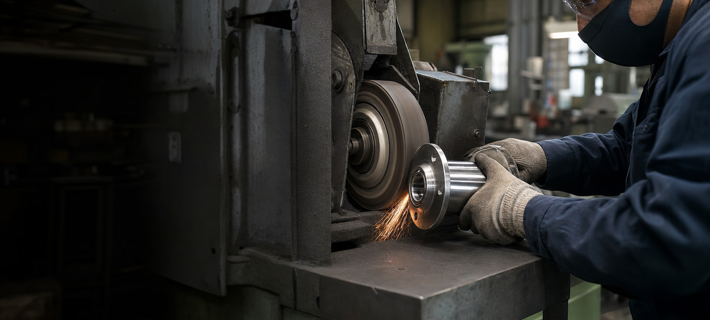
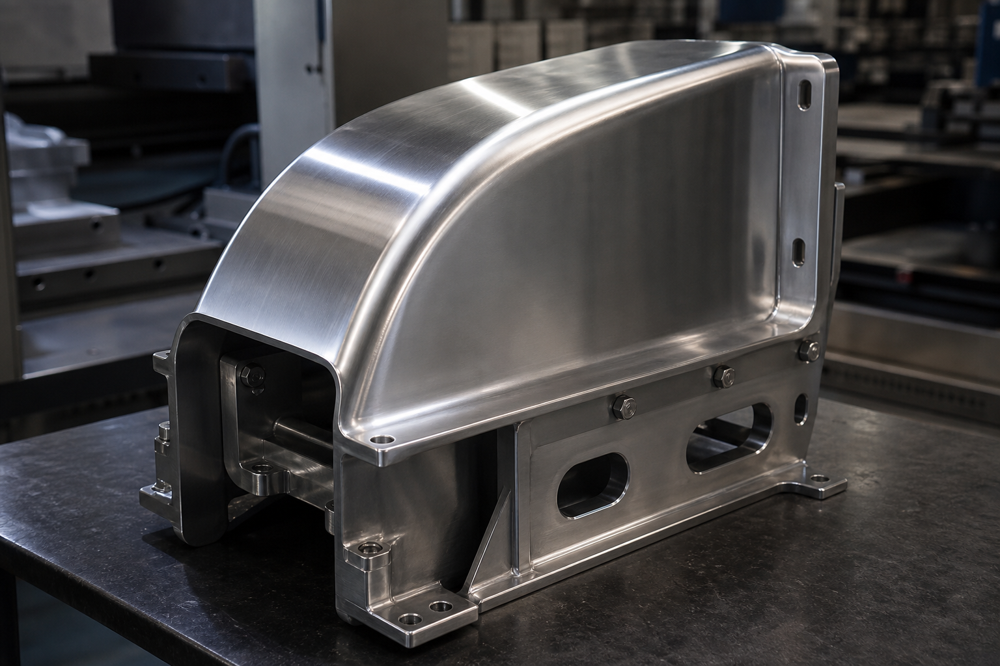
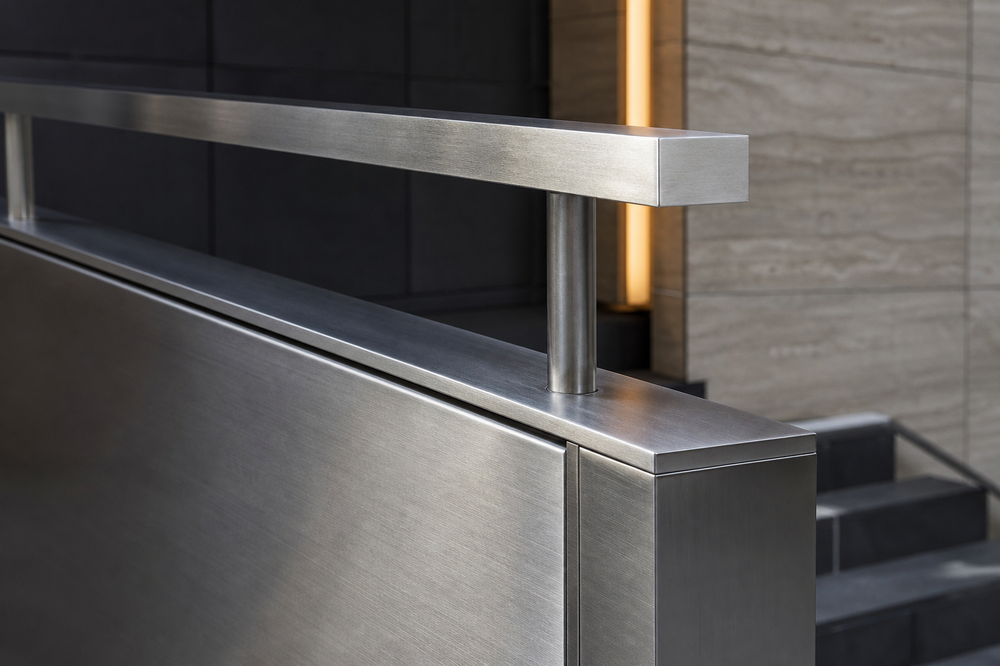
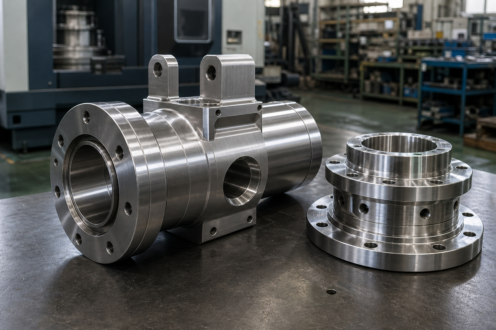
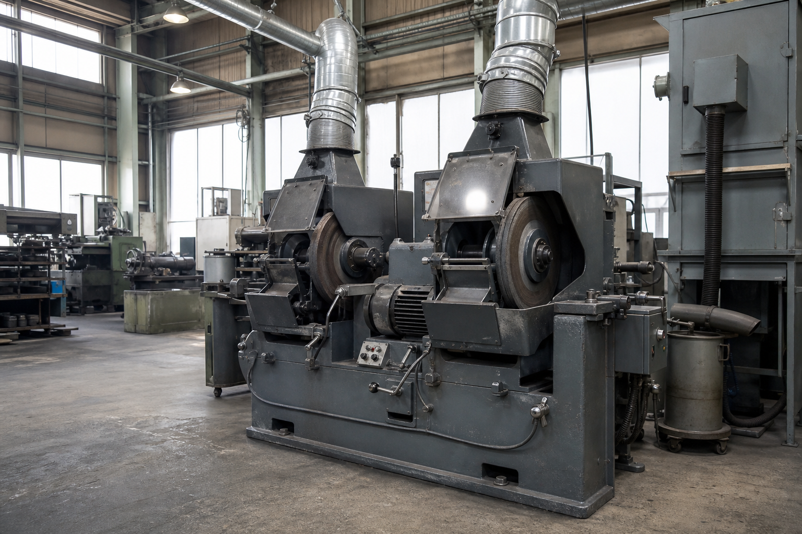
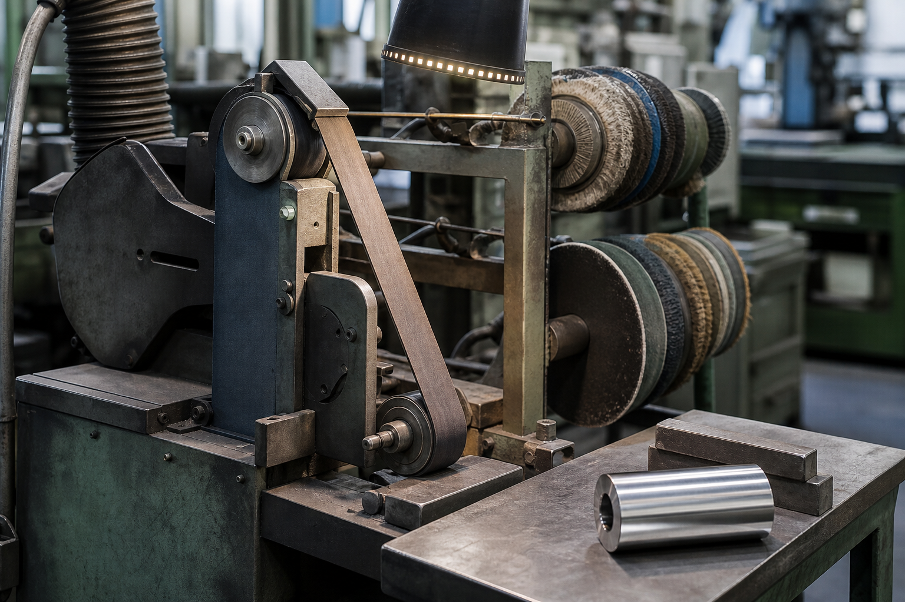
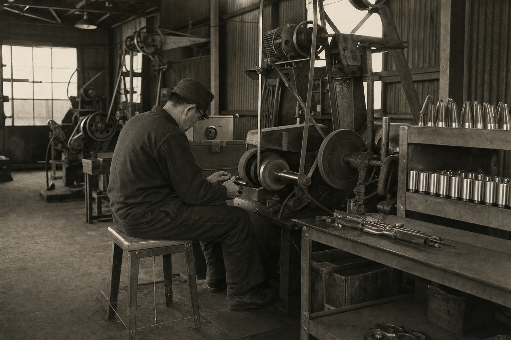

半世紀を超える
研磨の経験
素材の特性や用途を見極め、最適な仕上げをご提案。長年の経験に裏打ちされた、安定した品質をお届けします。

METAL POLISHING IN OSAKA
鉄道部品・建築金物・産業部品まで。
大阪の町工場として、精度と仕上がりにこだわった
研磨加工を行っています。
WHY CHOOSE US
一つひとつの仕事に、誠実に向き合う。
積み重ねてきた技術と経験が、私たちの強みです。
素材の特性や用途を見極め、最適な仕上げをご提案。長年の経験に裏打ちされた、安定した品質をお届けします。
鉄道部品や建築金物の大型案件から、町工場の一点ものまで。規模を問わず、細やかに対応します。
工程管理と検品を徹底し、納期を厳守。次の工程を考えた仕上がりで、お客様の現場を支えます。
OUR WORKS
幅広い分野で求められる品質に、確かな研磨技術で応えます。



FACILITIES
熟練の技を支える設備を整え、
多様な素材・形状に対応しています。



OUR HISTORY
技術だけでなく、信頼も磨く。
それが創業から変わらない私たちの仕事です。
1968年、東大阪の小さな工場から始まりました。職人の手仕事を大切にしながら、時代とともに設備と技術を磨き、鉄道・建築・産業を支える研磨会社へ。これからも実直なものづくりを続けてまいります。
RECRUIT
経験は問いません。ものづくりに誠実に向き合い、長く働きたい方を募集しています。熟練職人が基礎から丁寧に指導します。
採用について問い合わせる →CONTACT
図面や現物を確認のうえ、最適な加工方法をご提案します。
小ロット・短納期のご相談も、まずはお問い合わせください。